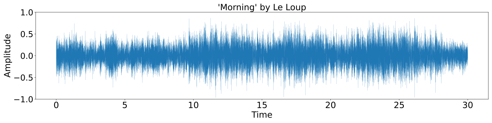
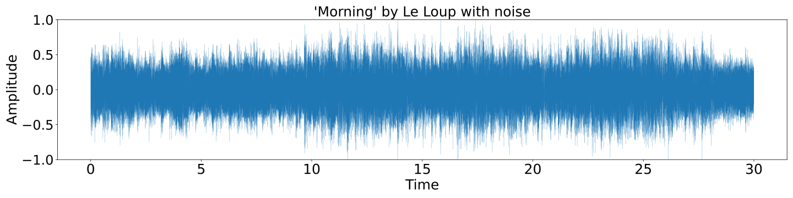
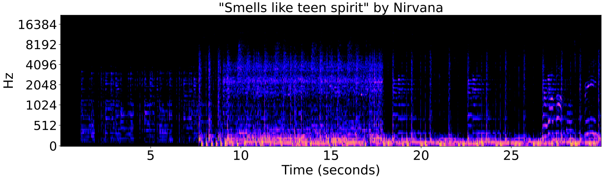
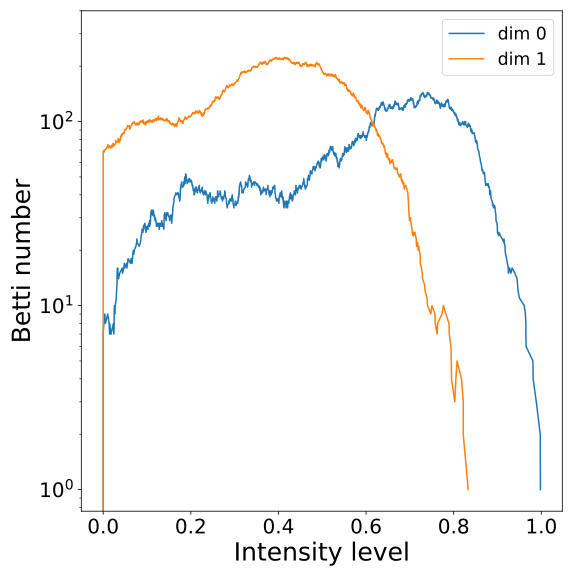
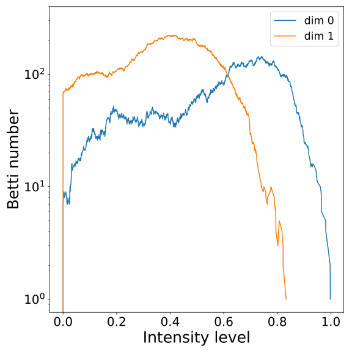

Topology and geometry for data analysis
XIMENA FERNANDEZ
University of Oxford
UK CENTRE FOR TOPOLOGICAL DATA ANALYSIS

1. Combinatorial methods in low-dimensional topology
The Andrews-Curtis Conjecture
Based on:
X. Fernandez. 'Morse theory for group presentations', Transactions of the AMS. To appear.
1. Combinatorial methods in low-dimensional topology
The Andrews-Curtis Conjecture
Based on:
X. Fernandez. 'Morse theory for group presentations', Transactions of the AMS. To appear.
Conjecture [Andrews & Curtis, 1965]. Any finite balanced presentation $\mathcal{P}=\langle x_1,\dots,x_n ~|~ r_1,\dots,r_n\rangle $ of the trivial group can be transformed into the empty presentation $\langle ~|~\rangle$ by a finite sequence of the following operations:
- $r_i \leadsto r_i^{-1}$
- $r_i \leadsto r_i r_j$ for some $j \neq i$
- $r_i \leadsto wr_i w^{-1}$ for some $w$ in the free group $F(x_1, x_2, \dots, x_n)$
- add a generator $x_{n+1}$ and a relator $r_{n+1}:=x_{n+1}$, or the inverse of this operation.
Potential counterexamples.
- $\mathcal{P}=\langle x, y~|~ xyx = yxy,~ x^n = y^{n+1}\rangle,~n\geq 2$ [Akbulut & Kirby, 1985]
- $\mathcal{P} = \langle x,y~|~x^{-1}y^n x = y^{n+1}, ~x = y^{-1}xyx^{-1}\rangle,~n\geq 2$ [Miller & Schupp, 1999]
- $\mathcal{P}=\langle x,y~| ~x=[x^m,y^n], y=[y^p,x^q]\rangle ,~n,m,p,q\in \mathbb{Z}$ [Gordon, 1984]
- $\dots$
1. Combinatorial methods in low-dimensional topology
The Andrews-Curtis Conjecture
Based on:
X. Fernandez. 'Morse theory for group presentations', Transactions of the AMS. To appear.
Equivalent conjecture [Whitehead]. Any contractible simplicial complex of dimension 2 can be 3-deformed to a point.
Theorem [F.] (Morse Theory) Let $K$ be a regular CW-complex of dim $2$ and let $f:K\to \mathbb{R}$ be discrete Morse function. Then, $K$ 3-deforms to a computable CW-complex $K_f$ with a cell for every critical cell of $f$.
Theorem [F.]
The following potential counterexamples satisfy the Andrews-Curtis conjecture:
$\bullet ~~\mathcal{P}=\langle x, y~|~ xyx = yxy,~ x^2 = y^{3}\rangle$* [Akbulut & Kirby, 1985]
$\bullet ~~\mathcal{P}= \langle x,y~|~x^{-1}y^3 x = y^{4}, ~x = y^{-1}xyx^{-1}\rangle$ [Miller & Schupp, 1999]
$\bullet ~~\mathcal{P}=\langle x,y~| ~x=[x^{-1},y^{-1}], y=[y^{-1},x^q]\rangle, \forall q \in \mathbb{N}$ [Gordon, 1984]
* First proved by Miasnikov in 2003 using genetic algorithms.
2. Density-based geometric inference
Fermat distance
Based on:
X. Fernandez, E. Borghini, G. Mindlin, P. Groisman. 'Intrinsic persistent-homology via density-based metric learning'. Journal of Machine Learning Research. 24 (2023) 1-42.
2. Density-based geometric inference
Fermat distance
Based on:
X. Fernandez, E. Borghini, G. Mindlin, P. Groisman. 'Intrinsic persistent-homology via density-based metric learning'. Journal of Machine Learning Research. 24 (2023) 1-42.
Let $\mathbb{X}_n = \{x_1,...,x_n\}\subseteq \mathbb{R}^D$ be a finite sample.
Assume that:
- $\mathbb{X}_n$ is a sample of a compact Riemannian manifold $\mathcal M$ of dimension $d$.
- The points are sampled according to a density $f\colon \mathcal M\to \mathbb R$.
Goal: Infer $'H_\bullet(\mathcal M, f)'$


Density-based geometry
Let $\mathcal M \subseteq \mathbb{R}^D$ be a manifold and let $f:\mathcal{M}\to \mathbb{R}_{>0}$ be a smooth density.
For $q>0$, the deformed Riemannian distance in $\mathcal{M}$ is \[ d_{f,q}(x,y) = \inf_{\gamma} \int_{\gamma}\frac{1}{f(\gamma)^{q}} \] over all $\gamma:I\to \mathcal{M}$ with $\gamma(0) = x$ and $\gamma(1)=y$.

Let $\mathbb{X}_n = \{x_1,...,x_n\}\subseteq \mathbb{R}^D$ be a finite sample.
For $p> 1$, the Fermat distance between $x,y\in \mathbb{R}^D$ is defined by \[ d_{\mathbb{X}_n, p}(x,y) = \inf_{\gamma} \sum_{i=0}^{r}|x_{i+1}-x_i|^{p} \] over all paths $\gamma=(x_0, \dots, x_{r+1})$ of finite length with $x_0=x$, $x_{r+1} = y$ and $\{x_1, x_2, \dots, x_{r}\}\subseteq \mathbb{X}_n$.

Convergence results
Theorem (F., Borghini, Mindlin, Groisman)
\[\big(\mathbb{X}_n, C(n,p,d) d_{\mathbb{X}_n,p}\big)\xrightarrow[n\to \infty]{GH}\big(\mathcal{M}, d_{f,q}\big) ~~~ \text{ for } q = (p-1)/d\]
Let $\mathcal{M}$ be a closed smooth $d$-dimensional Riemannian manifold embedded in $\mathbb{R}^D$. Let $\mathbb X_n\subseteq \mathcal{M}$ be a set of $n$ independent sample points with common smooth density $f:\mathcal{M}\to \mathbb{R}_{>0}$.
Given $p>1$ and $q=(p-1)/d$, there exists a constant $\mu = \mu(p,d)$ such that for every $\lambda \in \big((p-1)/pd, 1/d\big)$ and $\varepsilon>0$ there exist $\theta>0$ satisfying \[ \mathbb{P}\left( d_{GH}\left(\big(\mathcal{M}, d_{f,q}\big), \big(\mathbb{X}_n, {\scriptstyle \frac{n^{q}}{\mu}} d_{\mathbb{X}_n, p}\big)\right) > \varepsilon \right) \leq \exp{\left(-\theta n^{(1 - \lambda d) /(d+2p)}\right)} \] for $n$ large enough.
Corollary (F., Borghini, Mindlin, Groisman)
\[\mathrm{dgm}(\mathrm{Filt}(\mathbb{X}_n, {C(n,p,d)} d_{\mathbb{X}_n,p}))\xrightarrow[n\to \infty]{B}\mathrm{dgm}(\mathrm{Filt}(\mathcal{M}, d_{f,q})) ~~~ \text{ for } q = (p-1)/d\]
Fermat distance


Density-based intrinsic persistence diagrams


3. Applications of persistent homology
Audio ID
Based on:
W. Reise, X. Fernandez, M. Dominguez, H.A. Harrington, M. Beguerisse-Diaz. 'Topological fingerprints for Audio Identification'. SIAM Journal of Data Science. (2024, accepted).
3. Applications of persistent homology
Audio ID
Based on:
W. Reise, X. Fernandez, M. Dominguez, H.A. Harrington, M. Beguerisse-Diaz. 'Topological fingerprints for Audio Identification'. SIAM Journal of Data Science. (2024, accepted).
Given two audio track, identify whether they correspond to the same audio content .
 3. Applications of persistent homology
Audio ID
Based on:
W. Reise, X. Fernandez, M. Dominguez, H.A. Harrington, M. Beguerisse-Diaz. 'Topological fingerprints for Audio Identification'. SIAM Journal of Data Science. (2024, accepted).
 
$~$
 $~$
$~$
 $~$
$~$
 $~$
$~$
 $~$
$~$
 $~~$
$~$
$~$
$~$
$~$
$~~$
$~$
$~$
$~$
$~$


 $~$
$~$


 

$~~~~~~~~~~~t_0~~~~~~~~~~~~~~~~~t_1~~~~~~~~~~~~~~~~~~t_2~~~~~~~~~~~~~~~~~t_3~~~~~~~~~~~~~~~~~t_4~~\dots~~~~~~~~~~~~~~~~t'_0~~~~~~~~~~~~~~~~~t'_1~~~~~~~~~~~~~~~~~t'_2~~~~~~~~~~~~~~~~t'_3~~~~~~~~~~~~~~~~t'_4~~\dots$
3. Applications of persistent homology
Audio ID
- Synchronization of oscillatory networks. With H.A. Harrington, H. Schenck and M. Stillman.
- Prevalence augmented persistence barcodes. With A. Monod and WinCompTop Research Group.
- Signal vs noise in persistent diagrams.
- 'Homology' of metric measure spaces.